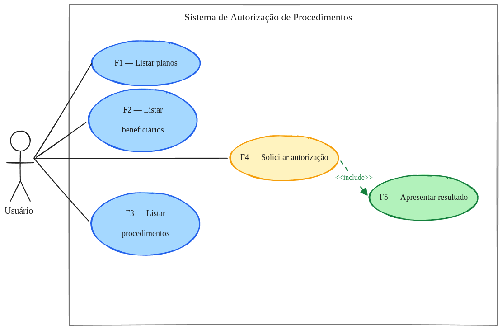
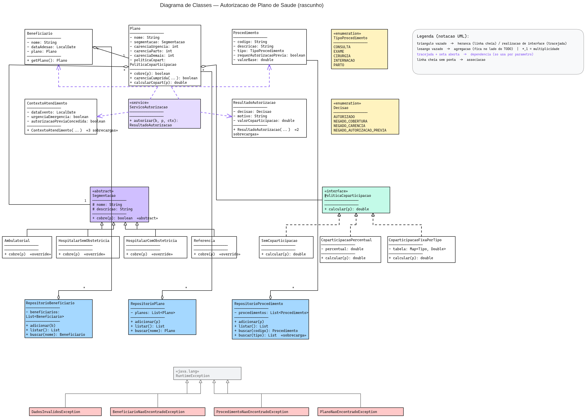

Aluno: Pedro Gomes Sampaio Disciplina: Programação Orientada a Objetos Entrega: 28/07/2026
Os exemplos práticos deste relatório partem de um cenário do setor de saúde suplementar: a autorização de procedimentos por plano de saúde.
Quando um beneficiário — pessoa coberta por um plano — precisa realizar um procedimento médico (consulta, exame, cirurgia, internação ou parto), a operadora precisa decidir se aquele procedimento será autorizado ou negado. Essa decisão não é arbitrária: segue um conjunto de regras contratuais e regulatórias avaliadas em sequência.
O resultado é sempre uma decisão (autorizado ou negado) acompanhada de um motivo claro e, quando autorizado, do valor de coparticipação devido.
É esse cenário que os diagramas a seguir modelam — primeiro pelo ângulo do comportamento esperado (casos de uso), depois pelo ângulo da estrutura que sustenta esse comportamento (classes).
Conceito
O Diagrama de Casos de Uso é um diagrama comportamental da UML que descreve as interações entre agentes externos — chamados de atores — e um sistema, por meio de funcionalidades observáveis chamadas casos de uso. O foco está no comportamento externo do sistema: o que ele faz, não como o faz. Cada caso de uso representa uma funcionalidade completa que entrega valor a pelo menos um ator.
Os elementos principais são:
<<include>> (caso de uso sempre
inclui outro), <<extend>> (caso de uso
opcionalmente estende outro) e generalização (ator ou caso de
uso herda de outro).Propósito
O diagrama serve para capturar requisitos funcionais de alto nível e comunicá-los a diferentes públicos — clientes, analistas e desenvolvedores. É o ponto de partida do levantamento de requisitos: antes de decidir como o sistema será construído, define-se o que ele deve fazer e para quem.
Aplicabilidade
É aplicado principalmente nas fases iniciais de análise e modelagem:
Vantagens
Desvantagens
<<include>> e
<<extend>> são frequentemente mal empregadas,
gerando modelos confusos.O diagrama a seguir modela o cenário de autorização de procedimentos na perspectiva comportamental — o que o sistema deve fazer e para quem.

Elementos identificados:
| Elemento | Tipo | Descrição |
|---|---|---|
| Usuário | Ator | Operador do sistema (recepcionista, profissional de saúde) |
| F1 — Listar planos | Caso de uso | Consulta os planos cadastrados |
| F2 — Listar beneficiários | Caso de uso | Consulta os beneficiários cadastrados |
| F3 — Listar procedimentos | Caso de uso | Consulta os procedimentos disponíveis |
| F4 — Solicitar autorização | Caso de uso | Inicia o fluxo de autorização de um procedimento |
| F5 — Apresentar resultado | Caso de uso | Exibe a decisão (autorizado/negado) e o motivo |
<<include>> |
Relacionamento | F4 sempre inclui F5: toda solicitação produz um resultado apresentado |
Leitura do modelo: o único ator é o Usuário, que
interage diretamente com as cinco funcionalidades do sistema. A relação
<<include>> entre F4 e F5 explicita que F5 não
é um caso de uso independente — ele é parte obrigatória do fluxo de
autorização. O sistema está delimitado pelo retângulo, deixando claro
que entidades externas como seguradoras ou prontuários eletrônicos estão
fora do escopo.
Conceito
O Diagrama de Classes é o diagrama estrutural mais utilizado da UML. Representa as classes de um sistema orientado a objetos — seus atributos, métodos e os relacionamentos entre elas — capturando a estrutura estática do modelo. Cada classe aparece como um retângulo dividido em três compartimentos: nome, atributos e operações.
Os relacionamentos principais são:
1,
*, 1..*, etc.).Outros elementos notáveis: «interface»,
«abstract», «enumeration» e estereótipos
personalizados como «service».
Propósito
Modelar a estrutura interna do sistema para servir de blueprint(modelo) para a implementação. Enquanto o diagrama de casos de uso responde ao “o quê”, o diagrama de classes começa a responder ao “como”: quais entidades existem, que dados carregam e como se relacionam.
Aplicabilidade
Vantagens
Desvantagens
O diagrama abaixo modela o mesmo cenário na perspectiva estrutural — quais entidades existem, quais informações carregam e como se relacionam.

Estrutura do modelo:
O sistema é organizado em quatro grupos de responsabilidade:
Domínio central
Beneficiario agrega Plano (1:1): um
beneficiário pertence a um plano, mas o plano existe independentemente.
Plano agrega Procedimento indiretamente via
ContextoAtendimento, passado como parâmetro na operação de
autorização. Plano também agrega Segmentacao
(1:1) e PoliticaCoparticipacao (1:1).
Serviço de autorização
ServicoAutorizacao depende de Beneficiario,
Procedimento e ContextoAtendimento por
parâmetro (dependência, não associação). Ele produz um
ResultadoAutorizacao, que encapsula a Decisao
(enum) e o valor de coparticipação calculado.
Padrão Strategy — cobertura e coparticipação
Segmentacao é uma classe abstrata com quatro
especializações concretas (Ambulatorial,
HospitalarSemObstetricia,
HospitalarComObstetricia, Referencia), cada
uma implementando cobre(p): boolean de forma diferente. O
polimorfismo elimina condicionais do serviço.
PoliticaCoparticipacao é uma interface realizada por
três classes concretas: SemCoparticipacao,
CoparticipacaoPercentual e
CoparticipacaoFixaPorTipo. O Plano delega o
cálculo para a política atribuída — mesma mecânica do Strategy.
Repositórios e exceções
Três repositórios (RepositorioBeneficiario,
RepositorioPlano, RepositorioProcedimento)
encapsulam a coleção em memória e expõem operações de adição, listagem e
busca. Quatro exceções de domínio herdam de
RuntimeException: DadosInvalidosException,
BeneficiarioNaoEncontradoException,
ProcedimentoNaoEncontradoException e
PlanoNaoEncontradoException — lançadas na borda do sistema
quando um recurso não é encontrado.
Decisões de relacionamento relevantes
| Relacionamento | Tipo escolhido | Justificativa |
|---|---|---|
Plano → Segmentacao |
Agregação | Segmentação existe independentemente do plano |
Plano → PoliticaCoparticipacao |
Agregação | Política é intercambiável; não é parte exclusiva |
ServicoAutorizacao → entidades |
Dependência | Usa apenas via parâmetro, sem referência permanente |
Segmentacao → subclasses |
Herança | Especialização de comportamento (Strategy via herança) |
PoliticaCoparticipacao → implementações |
Realização | Interface com múltiplas implementações intercambiáveis |